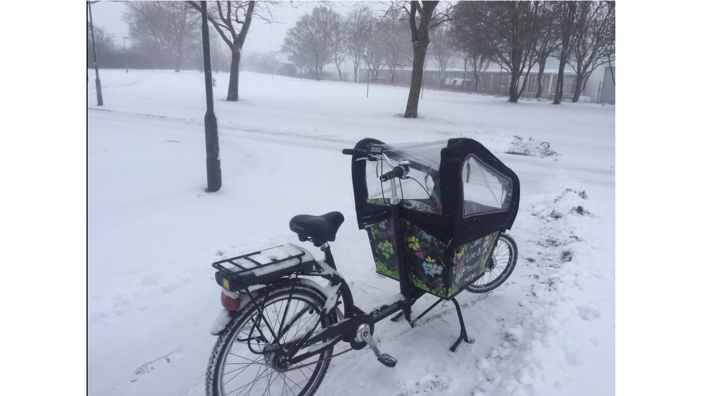

South Korea

While South Korea doesn't receive as much media attention as its communist cousin, North Korea, this gem of a country is often overlooked due to being nestled between China and Japan.
South Korea might have been put on the map by Psi's ubiquitous Gangnam Style, however this country offers an extraordinary cultural experience that manages to be both technologically progressive and socially regressive.
5 largest cities in South Korea
- Seoul
- Busan
- Incheon
- Daegu
- Daejeon
source: geonames
Sweden

This country makes up Scandinavia along with Norway and Denmark, and is often looked on as the most progressive with social issues such as equality and sustainability.
While it is known for such iconic exports as Volvo Cars, ABBA, and of course the furniture giant IKEA, visitors will find a huge range of climates, landscapes, traditions and pickled herring along this Nordic country.
And meatballs. You will also experience a lot of meatballs.
5 largest cities in Sweden
- Stockholm
- Gothenburg
- Malmo
- Uppsala
- Sollentuna
source: geonames
Yemen

Just a few years ago people's knowledge of Yemen extended only as far as the 1998 TV sitcom episode of 'Friends' in which Chandler fled there to escape Janice.
Unfortunately armed conflict escalated after the Arab Sping and has continued with devastating consequences to the civilian population.
Before the civil war Yemen was a country with amazing tourist potential; from UNESCO world heritage site cities and structures, to the rich history of the frankincense and myrrh trade routes, and the breathtaking landscapes - not to mention the unique flora and fauna found only on Socotra.
5 largest cities in Yemen
- Sanaa
- Al Hudaydah
- Ta'izz
- Aden
- Mukalla
source: geonames